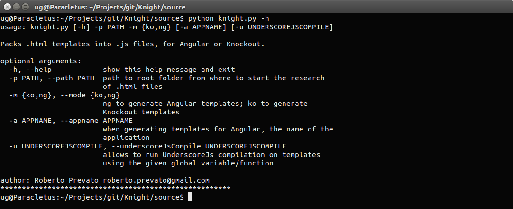

Repository structure
- The source folder contains the tool source code, which is in Python.
- This code can be executed by both Python 2.x and Python 3.x.
- The source folder also contains a setup.py file used with cx_Freeze to generate the executables.
- The built folder contains executables versions of the application: Windows users who don't want to (or cannot) install Python, can use the .exe file provided there.
- The docs folder contains information used for this documentation, and files for examples in Angular and Knockout.
Commands
-
-h --help
displays the help for the console application
 -
-p / --path path -m / --mode mode {ko,ng}
starting from the given folder path, looks recursively inside each direct child folder, and generates for each of them a templates.js file containing the packed HTML files.
Example:
- ~/scripts/areas/
- public/account/templates/settings.html
- public/account/templates/details.html
- public/help/templates/some-name-1.html
- public/help/templates/some-name-2.html
- public/templates.js <-- generated file containing all .html files found under "public" directory
- ~/scripts/areas/
- admin/accounts/templates/list/accounts-table.html
- admin/accounts/templates/list/accounts-filters.html
- admin/accounts/templates/accounts-dashboard.html
- admin/messages/templates/list/messages-table.html
- admin/messages/templates/list/messages-filters.html
- admin/messages/templates/messages-dashboard.html
- admin/templates.js <-- generated file containing all .html files found under "admin" directory
- ~/scripts/areas/
Optional parameters
-
-a --appname application name
when generating templates.js files for Angular, the name of a global variable referencing the application object (default == "app").
-
-u --underscoreJsCompile js global variable name
allows to run UnderscoreJs compilation on templates, using the given global variable/function. The parameter determines the context passed as argument for _.template function (default == null).
N.B. UnderscoreJs is not required, if this parameter is not specified.